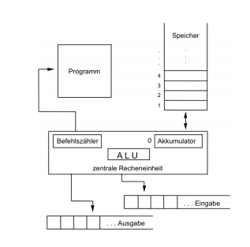

This blog post contains the material covered in lecture 15 and 16 because it is the same subject and it does not make sense to split it :P.
Complexity
As you've hopefully already noticed there are algorithms that differ in regards to efficiency. Algorithmic efficiency refers to the number of computational resources (computation time and memory space) used by the algorithm.
For maximum efficiency we wish to minimize resource usage. However, different resources such as time and space complexity cannot be compared directly, so which of two algorithms is considered to be more efficient often depends on which measure of efficiency is considered most important.
RAM Model
It is impractical to measure the computation time with a stopwatch or operating system functions because then there'd be a lot of other factors involved such as compiler, hardware and operating system.
But to measure the quality of algorithms (not their implementation) we don't even need a time because we use abstract computer models. For example the Random Access Machine (RAM model) which is used for computational complexity analysis.
RAM Components:
-
program
- numbered, finite series of instructions
-
storage
- enumerable (infinite) amount of storage locations(registers) (slides: abzählbar (unendlich) viele Speicherstellen (Register))
- arbitrarily accessible
- every register can store an arbitrary integer
-
in-/output
- continuous sequences (bänder, ribbons)
- either input (read) or output (write) in the given situation
- central processing unit
- instruction counter that holds the number of the instruction that is to be executed
- accumulator = target register of computations, address 0
- arithmetic logic unit = enginge / functional unit for execution of operations

The "common/usual" instructions are available in a RAM:
- basic arithmetic operations: + - * / mod
- comparisons: > < = ≥ ≤
- branching/conditions: if
- jumps : GOTO (loops are branches with jumps btw)
- loading/storing: LOAD, STORE
- in-/output: READ, WRITE
Operands:
- registers (can be chosen arbitrarily), also indirectly
- accumulator (implicit)
- input sequence and output sequence (not arbitrarily ~ nicht wahlfrei)
For the RAM there are two models of measuring the time cost:
- uniform cost measure: every instruction has a time cost of 1 time unit (eg Takt/clock signal or millisecond ..)
- since every instruction has the same length/duration the instrucion executions are determining the cost
- logarithmic time cost measure: the length of the numbers that have to be processed determine the time
- length l(x) of x ∈ G: l(0) = 1, l(x) = (log2 |x|) + 1
- the logarithmic time costs of an instruction are equal to the sum of the length of the numbers that have to be processed
- the logarithmic time cost measure should be usend when the size/length of the numbers is of critical significance
- in addition to the instruction executions the size of the operands is of importance in regards to the cost
Instructions that are executed in a loop are counted repeatedly and since the execution of instructions (and loop iterations) often depends on the input size n we measure the amount of instructions that are executed with TA(n), for example:
| Algorithm | TA(n) | optimal for |
|---|---|---|
| A1 | 1000 * n | n ≥ 101 |
| A2 | 200*n*log n | never |
| A3 | 10 * n2 | 10 ≤ n ≤ 100 |
| A4 | 2n | 1 ≤ n ≤ 9 |
-
Run-time Analysis
Even for constant \(n\) is TA not always the same:
- worst case analysis
- for every n define the runtime as T(n) = max(t(Input)), ∀ |Input| = n
- guaranteed boundaries for every input
- used as standard
- average case analysis
- for every n define the runtime as T(n) = \(\bar{t}\)(Input) ∀ |Input| = n
- depends on the definition of average → distribution of inputs
- rarely used (hard to determine the average)
- best case analysis
- for every n define the runtime as T(n) = min(t(Input)), ∀ |Input| = n
- looks for minimal runtime
- shows design mistakes (Entwurfsfehler)
- has no real significance (easy to cheat)
In general the analysis of TA is rather hard that's why order of magnitudes (Größenordnungen) are used more commonly. We know such from real life eg: vLaufen < vRad < vAuto < vFlugzeug
Note: I skipped the slides on "big A notation" here because I fail to see the relevance of it and cant find anything about in the internet (slides 14-15, chapter 8).
- worst case analysis
Big O Notation
Often times the growth rate of algorithms/function is of interest. The big-O notation is commonly used to describe how a function grows. A common goal is to find algorithms/functions that are still efficient for large problem instances (inputs) and if that is the case we usually say that they scale good. Two functions eg \(f(n)\) and \(g(n)\) have the same growth rate when the ratio for a sufficient amount of \(n\) is limited by the same constant upper and lower boundaries (slides: Zwei Funktionen f(n) und g(n) haben das gleiche Wachstumsverhalten, falls für genügend große n das Verhältnis der beiden nach oben und unten durch Konstanten beschränkt ist), which means that \(c < \frac{f(n)}{g(n)} and \frac{g(n)}{f(n)}\) needs to be true. For example:
- \(f_1(n)=n^2\) and \(f_2(n)=5*n^2-7*n\) have the same grow because for all \(n > 2\) the following applies: \(\frac{1}{5} < \frac{(5n^2-7n)}{n^2} < 5\) and \(\frac{1}{5} < \frac{n^2}{(5n^2-7n)} < 5\)
- \(f_1(n)=n^2\) and \(f_2(n)=n^3\) do not have the same grow because for all sufficient large \(n\) (hinreichend groß) the following applies \(\frac{n^3}{n^2} = n > c\)
The big O notation (big O refers to the greek letter omikron) is also called Landau Notation.
Big O Notation can also be used to state which function dominates the growth. For two monotone function f(n) and g(n) the function f(n) dominates the function g(n) if \(g(n) \in \mathcal{O}(f(n))\). The notation \(dom(f(n),g(n))\) yields the dominating function. For example
- dom(n3, n2) = n3
- dom(2n, nk) = 2n (for constant k > 1)
There are also some computation rules (Rechenregeln) when it comes to big O: \[ \mathcal{O}(f(n)) + \mathcal{O}(g(n)) = \mathcal{O}(f(n) + g(n))\\ \mathcal{O}(f(n) + g(n)) = \mathcal{O}(dom(f(n), g(n)))\\ \mathcal{O}(f(n)) * \mathcal{O}(g(n)) = \mathcal{O}(f(n) * g(n)) \]
These are some common types/classes of functions in regards to big O:
| Notation | Term | Typical Algorithms/Operations |
|---|---|---|
| O(1) | constant | addition, comparisons, recursive call |
| O(log n) | logarithmic | search in a sorted sequence |
| O(n) | linear | modifying each element of a set |
| O(n * log n) | good sorting algorithm | |
| O(n * log n) | good sorting algorithms | |
| O(n * log2 n) | good sorting algorithms | |
| … | …. | … |
| O(n2) | quadratic | primitive sorting algorithms |
| O(nk), k >= 2 | polynomial | primitive sorting algorithms |
| … | … | … |
| O(2n) | trying combinations | |
| O(kn), k > 1 | exponential |
The O(n)-notation depends on the size of the input, that is the storage space in bits or words.
In addition to the most common big O notation there are several related notations to describe other kinds of bounds on asymptotic growth rates:
- big Omega notation \(\Omega(f(n)) = {g(n) \exists c > 0, \exists n_0 >0, \forall n > n_0, g(n) \geq c * f(n)}\) → lower boundary / "mindestens"
- big Theta notation \(\Theta(f(n)) = \mathcal{O}(f(n)) \cap \Omega(f(n))\) → exactly / "genau"
- little o notation \(o(f(n)) = {g(n) | \forall c > 0, \exists n_0 > 0, \forall n > n_0, g(n) \leq c*f(n)}\) → at max / "weniger"
- little omega notation \(o(f(n)) = {g(n) | \forall c > 0, \exists n_0 > 0, \forall n > n_0, g(n) \geq c*f(n)}\) → "mehr"
What followed in the slides are some example computation times for different complexities and algorithms.
Take for example the algorithm to search the minimum in a sequence:
require: sequence a_1, ..., a_n;
ensure: p = min(a_1,..., a_n);
p <- a_1
for i in {2, ..., n} do
if a_i < p then
p <- a_i
end if
end for
In the above example the complexities are \(\mathcal{O}(n)\), Ω (n) and Θ (n).
Take a look at the lecture slides (chapter 8) from slide 26 to see some more examples.
Better Sorting
The sorting algorithms we saw so far (bubble sort and insertion sort) have a complexity in \(\mathcal{O}(n^2)\). Quicksort and Mergesort are generally better sorting algorithms. Let's look at quicksort:
require: array = {e_1, e_2, ..., e_n};
ensure: for all i in {1, n-1}, e_i <= e_{i+1} // sorted sequence condition
procedure QSORT(array)
if |array| <= then
return array
end if
select and remove a pivot value "pivot" from array
less <- []
greater <- []
for e in array do
if e <= "pivot" then
append e to less
else
append e to greater
end if
end for
return concatenate(QSORT(less), pivot, QSORT(greater))
end procedure
Because of the built-in list type a quicksort implementation in Python is pretty easy:
l = [9,8,7,54,2]
def qsort(list):
if list == []:
return []
else:
pivot = list[0]
less = []
greater = []
for x in list [1:]:
if x < pivot : less.append(x)
else : greater.append(x)
return qsort(less) + [pivot] + qsort(greater)
print(qsort(l))
[2, 7, 8, 9, 54]
The depth of the recursion in quick sort is not set in stone. How does the worse case look? The pivot element is always the smallest or largest element in the list so the recursion depth is n - 1 (why?). On each recursion call \(i = |array| - 1\) elements are handled which results in a recursion depth of n - recursion depth. In the worst case the complexity would be Θ(n2) so it wouldn't always be better than eg bubble sort! In such situation it makes sense to look at the average case (see slide 35 for that).
Space Complexity (Storage/Memory)
The required memory space is another critical resource in addition to the computation time. To measure this the same complexity measures are used. Let's look at the required storage space complexity for quicksort:
- new arrays are created on each recursion
- the required storage space is \(n\) in every recursion depth
- the maximum recursion depth is \(n-1\)
→ storage complexity of quicksort is \(\mathcal{O}(n^2)\).
However a storage complexity of \(\mathcal{O}(n)\) is achievable via a smart quicksort implementation by using in place mutations.